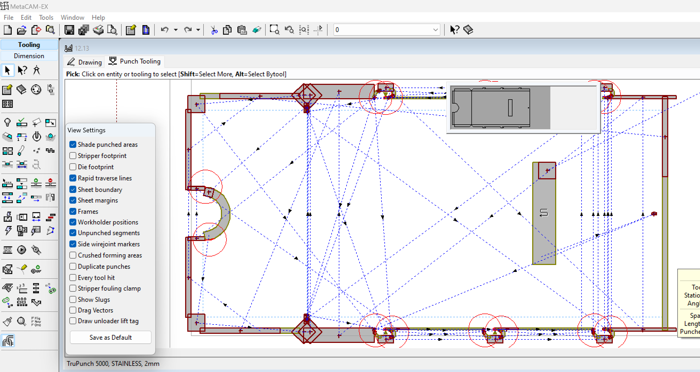

ตรวจสอบความเป็นไปได้
ฟีเจอร์ความเป็นไปได้ของชิ้นส่วนใน TruSmartCAM SolidWorks Add-in ช่วยให้ผู้ใช้สามารถ ตรวจสอบว่าชิ้นส่วนโลหะแผ่นสามารถผลิตได้สำเร็จโดยใช้ เครื่องจักรและการกำหนดค่าเครื่องมือที่มีอยู่ในโรงงานใน TruSmartCAM
ฟังก์ชันนี้ทำซ้ำขั้นตอนการวิเคราะห์แบบเดียวกันกับที่เครื่องมือ TruSmartCAM ดำเนินการระหว่างการอัปโหลดชิ้นส่วนจริง แต่ทำงานในเครื่อง โดยไม่แก้ไขหรือ แทนที่ชิ้นส่วนที่มีอยู่ในไลบรารีชิ้นส่วน TruSmartCAM
-
กล่องโต้ตอบความเป็นไปได้จะแสดงผลการวิเคราะห์สำหรับเครื่องจักรในโรงงาน ที่มีอยู่ทั้งหมดที่กำหนดค่าใน TruSmartCAM.
-
สถานะของแต่ละเครื่องจักรจะแสดงเป็น:
-
เป็นไปได้ - ชิ้นส่วนสามารถประมวลผลได้สำเร็จ
-
คำเตือน - ชิ้นส่วนสามารถประมวลผลได้โดยมีข้อจำกัด (เช่น การดัดหรือ ข้อจำกัดในการตัด)
-
ข้อผิดพลาด - ชิ้นส่วนล้มเหลวในความเป็นไปได้เนื่องจากปัญหาที่ขัดขวาง
-

-
คลิกไอคอน
 เพื่อเปิดไฟล์เทคโนโลยีที่ประเมินแล้ว
(TecZone หรือ MetaCAM) เพื่อตรวจสอบรายละเอียด
เพื่อเปิดไฟล์เทคโนโลยีที่ประเมินแล้ว
(TecZone หรือ MetaCAM) เพื่อตรวจสอบรายละเอียด
สำหรับแอสเซมบลี ฟังก์ชันเดียวกันนี้จะดำเนินการวิเคราะห์ความเป็นไปได้อย่างครอบคลุม สำหรับแต่ละคอมโพเนนต์โลหะแผ่นแต่ละชิ้น
-
ผลลัพธ์จะแสดงในกล่องโต้ตอบ Assembly Feasibility แสดงรายการ วัสดุ การกำหนดค่า และสถานะความเป็นไปได้ของแต่ละชิ้นส่วน
-
การเลือกชิ้นส่วนจะแสดงข้อมูลรายละเอียดบนแผงด้านขวา รวมถึงวัสดุ ขนาด น้ำหนัก และผลลัพธ์ความเป็นไปได้

-
การวิเคราะห์ความเป็นไปได้สำหรับแอสเซมบลีจะดำเนินการทีละชิ้นส่วน โดยใช้ ตรรกะเดียวกันกับการตรวจสอบความเป็นไปได้ของชิ้นส่วนแต่ละชิ้น
-
กระบวนการจะหยุดโดยอัตโนมัติที่ข้อผิดพลาดขั้นแรกที่ขัดขวางซึ่ง ไม่สามารถดำเนินการต่อได้
-
มีเพียงชิ้นส่วนโลหะแผ่นที่มีวัสดุและพารามิเตอร์ที่ถูกต้องเท่านั้นที่จะถูกวิเคราะห์
-
คอมโพเนนต์ที่ไม่ใช่โลหะแผ่นจะถูกข้าม แต่ยังคงแสดงรายการเพื่อเป็นการอ้างอิง
-
เนื่องจากการทำงานความเป็นไปได้ไม่ได้บันทึกหรืออัปโหลดข้อมูลไปยัง TruSmartCAM จึงสามารถใช้อย่างปลอดภัยสำหรับการตรวจสอบความถูกต้องของการออกแบบในระยะเริ่มต้น และสถานการณ์การวิเคราะห์ "จะเป็นอย่างไร"
|
คุณต้องมีใบอนุญาต TecZone หรือ MetaCAM ที่ถูกต้องเพื่อเปิดและตรวจสอบ ไฟล์เทคโนโลยีที่สร้างขึ้นที่เชื่อมโยงในผลลัพธ์ความเป็นไปได้ |